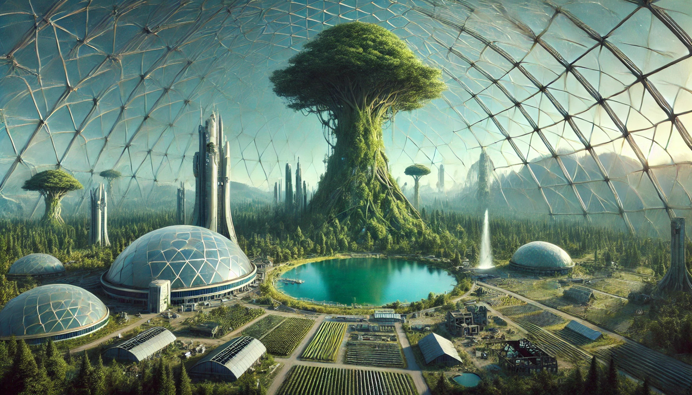
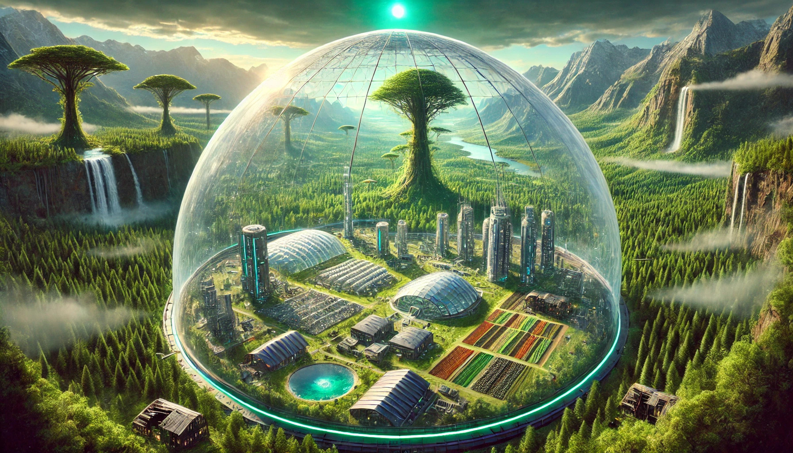
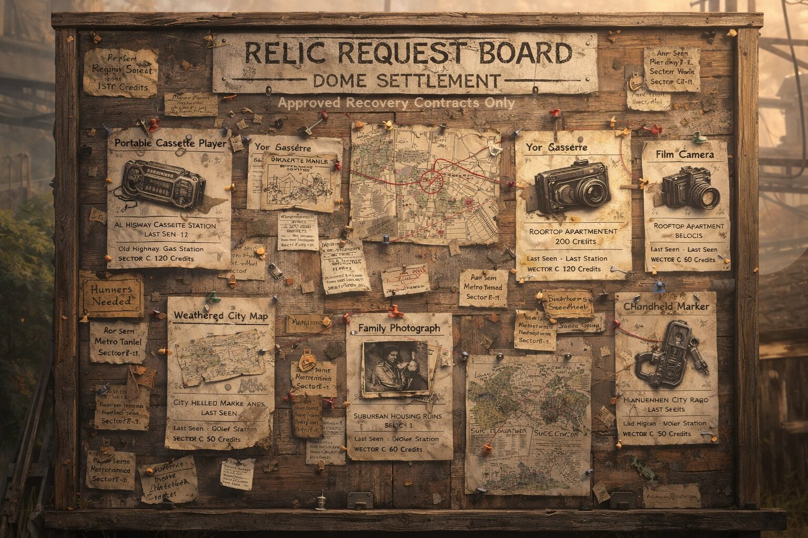

A world where accelerated evolution reshaped nature and civilization
was absorbed into the ecosystem.
Project Concept
Project Anano explores a world where nature evolved beyond human scale.
Instead of destroying civilization, the environment absorbed it.
Cities, roads, and infrastructure remain visible but are intertwined
with massive ecosystems.
Players explore the world as Jun, venturing outside dome settlements
to uncover relics from the old civilization and understand what happened
to the world.

Civilization structures remain visible but are intertwined with massive ecosystems.
Nature did not erase the old world — it grew around it.
World Design
The world of Anano focuses on a grounded mutation concept.
Plants and ecosystems did not become alien or magical —
they simply evolved to grow faster, larger, and more aggressively.
Trees grow through buildings, vines wrap around towers,
and roots break apart highways while still preserving fragments
of the past civilization.

Nature reclaiming the old world. Human structures remain embedded inside the ecosystem.
Core Gameplay Loop
Gameplay revolves around exploration, mutation discovery, and relic hunting.
Players explore mutated environments, encounter creatures, and gain new abilities
that allow deeper traversal into the world.
Exploration and mutation discovery drive player progression and unlock new areas.
Mutation System
Creatures in the world possess biological mutations that allow them to survive
in the evolved ecosystem. After defeating these creatures, players can extract
mutation cores and equip abilities derived from them.
These mutations enhance traversal, combat, and exploration capabilities,
allowing players to interact with the environment in new ways.
Mutation system flow: creatures provide abilities that expand exploration.
Relic Hunting
Relics are fragments of the old world requested by inhabitants of dome settlements.
These items are ordinary artifacts from the past such as books, radios,
photographs, or maps.
Recovering relics helps rebuild knowledge about the previous civilization
and provides narrative context for the transformed world.

Relic request board located outside the dome settlement.
Explorers accept contracts to retrieve objects from the ruins of the old world.